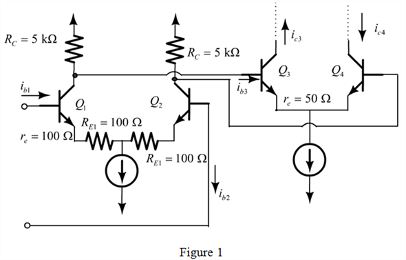

Obtain the voltage gain of first stage amplifier.
Substitute for ,  for ,
for ,  for and in equation.
for and in equation.
Therefore, the voltage gain of stage 1 is .
The BJT differential amplifier is shown in Figure 1.

Find the value of .
Therefore, the input resistance is
Obtain the voltage gain of first stage amplifier.
Substitute for , for , for and in equation.
Therefore, the voltage gain of stage 1 is .
Obtain the input resistance of the first stage.
Therefore, the value of is .
Find the current gain from the input of first stage to the collector of second stage.
Therefore, the value of is .